منزلك خطوة ..بـخطوة


-
الزراعة المنزلية باسهل الطرق
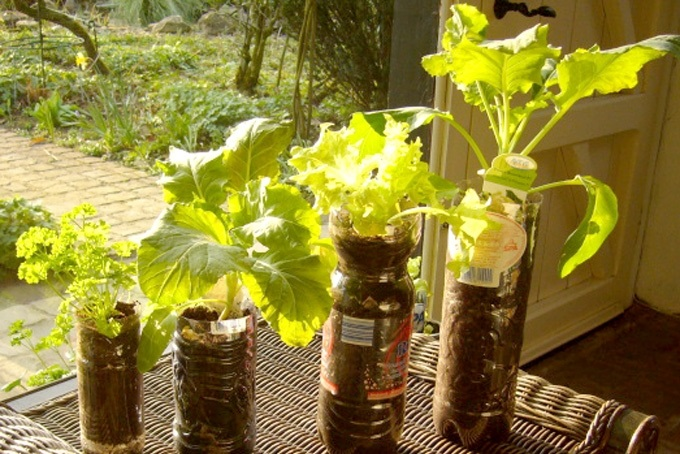
أولاً: ما ستحتاج إليه
2. تراب صالح للزراعة
3. اى نبته تحبها
4. ملَّاحة (أو أي قنينة بلاستيكية مثقبة لرش الماء)
ثانياً: خطوات الزراعة المنزلية
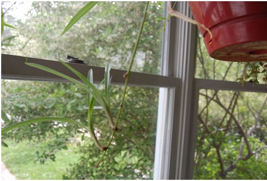
الطريقة الثانية –والتي سنتناولها في المقال- هي بالاقتصاص والتجذير. في هذه الحالة ستحتاج إلى قص جزء من نبتة نامية، وتركها لتنمو في الماء كما سنشرح لاحقاً. هنالك عدة نباتات يمكن تكثيرها عن طريق اقتصاص جزء منها. نبات العنكبوت (من أجمل خيارات الزراعة المنزلية) وهو سهل الإكثار، وسريع النمو، لذلك سنتناوله كمثال هنا، أما إذا لم يكن متوفراً لديك يمكنك تجربة النعناع بأخذ غصن متوسط الطول منه، فغالباً ما ينجح إكثار النعناع إذا اتبعت الطريقة الصحيحة. على كل حال أياً كان اختيارك، باتباع الخطوات ستجد أن الأمر سهل جداً.
في نبات العنكبوت تنمو البلابل (النبتات الصغيرة التي ستقص منها للإكثار) متصلة بالنبتة الأم، فهي تستمد منها الغذاء وفي نفس الوقت يمكن قصها ببساطة للإكثار بدون أن تؤذي النبتة الأم، وكل منها قابل لأن يصبح نبتة منفصلة جديدة.
2. اقتصاص جزء من النبتة المراد تكثيرها:
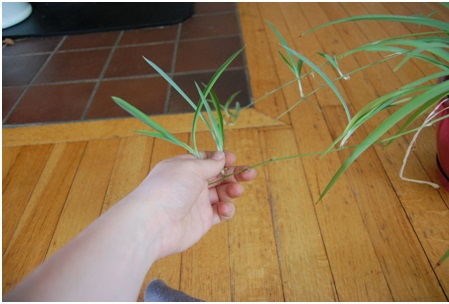
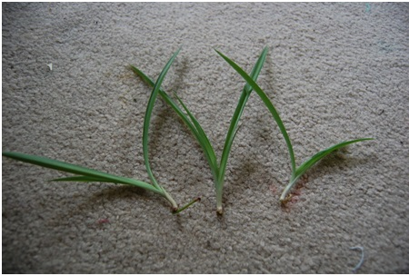
حاول اخذ مجموعة من النبتات الصغيرة (من 3-7 أو حتى أكثر)، لتضمن نجاح تجربتك في الزراعة المنزلية.
3. التجذير:
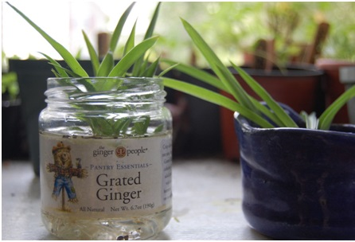
لتسمح بنمو جذور البلابل التي قصصتها، أسهل طريقة هي بوضعها في إناء يحتوي على الماء (يمكن أن يكون شفافاً ولكن يفضل أن يكون مظلماً لأن الجذور لا تحب الضوء)، وتركه لمدة كافية في الماء إلى أن تلاحظ نمو الجذور البيضاء الجديدة، مع تبديل الماء يومياً حتى لا يتعفن النبات. تختلف المدة من نبات لآخر، ولكن غالباً ما يتطلب الأمر من 24 ساعة إلى أسبوعين. في حالة نبات العنكبوت غالباً ما تحتاج إلى أسبوعين.
وهنا نبتة جاهزة لنقلها إلى وعاء الزراعة المنزلية ( في معظم النباتات يمكنك نقل النبتة بمجرد ظهور الجذور، دون الانتظار لأن تكبر إلى هذا القدر، ففي حال اعتادت الجذور على البيئة المائية قد تموت حين نقلها إلى التربة، وهو ما لا تود حدوثه):
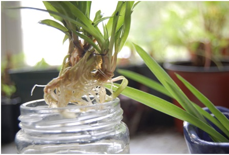
4. تجهيز الوعاء:
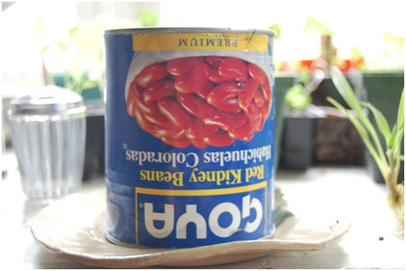
في حال قمت بشراء أصيص جاهز لبدء الزراعة المنزلية فيمكنك تجاوز هذه الخطوة ببساطة.
عندما تصل إلى مرحلة نقل النبات من الماء ستحتاج إلى أصيص تنقله فيه.
إذا لم تملك واحداً يمكنك استخدام أي علبة معدنية أو بلاستيكية، أو أي حاوية فارغة، بشرط أن تكون ذات حجم مناسب يسمح بنمو النبات دون أن يختنق من ضيق الوعاء. للنباتات حديثة النمو يمكنك استخدام أكواب البلاستيك أو حتى قناني المياه البلاستيكية بعد قطعها. أياً كان الوعاء الذي اخترت يجب أن تقوم بما يلي قبل نقل النبات إليه: – تخلص من الوجه العلوي للوعاء، بحيث يوفر مساحة كافية للنبات لينمو وينتشر.
– اصنع فتحات لتصريف الماء الفائض عن حاجة النبات، بصنع ثقوب متباعدة في أسفل الوعاء، وضع فوقها القليل من الحصى –قبل ملئها بالتراب- لتسمح بأفضل تصريف للماء.
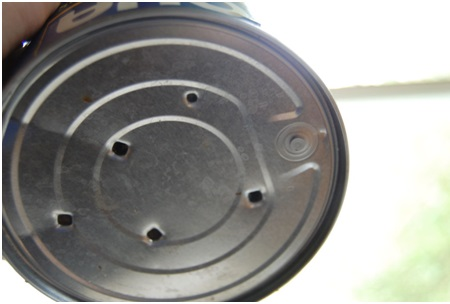
– ستحتاج إلى وعاء مسطح تقوم بوضعه أسفل وعاء الزراعة المنزلية، ليتجمع فيه الماء الزائد عن حاجة النبات.
5-غرس النباتات المنزليه
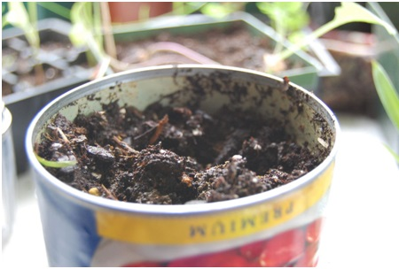
وهي الخطوة الأكثر تشويقاً. قم بغمس إصبعك- أو أي أداة مناسبة- في تراب الأصيص لتصنع فجوة تكفي لإدخال النبتة بمجرد نقلها. ضع النبتة برفق داخل الحفرة التي صنعتها، وحاول تغطية جذورها تماماً بالتراب.
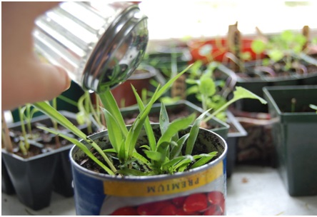
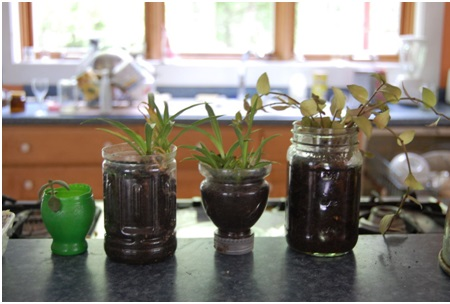
تحميل كتاب طرق الزراعه المنزليه
المواضيع الفرعيه الخاصه ب قسم التعريف
ذات صله
من اعمالنا


زائر مستجد
ان هذا الموقع اكثر من رائع انه يقدم نباتات هائله ونادره ويعلمك كيفيه الاعتناء بها ورعايتها
زائر قديم
ان فريق عمل هذا الموقع جميل جدا في عمله ويقدم اغرب النباتات والاشجار والورود واكثرها شيوعا ويعلمك كيفيه تسميدها ورعايتها